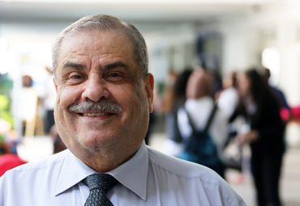

A Welcome from the Director of Arabic Studies

Welcome to the website of the American School of Kuwait. ASK is a wonderful school - a place at which teachers can teach and very capable children come to learn. Our 1800+ students benefit from a rigorous American curriculum which prepares students to be accepted into the greatest universities in the world. Our Incredibly talented faculty is the key to our success - that, and we have the smartest and nicest students in the world!
Please enjoy your visit to our website - if you want to become a part of the ASK community - whether as a teacher or a student - please contact us! Kuwait is a wonderfully cosmopolitan city in an exciting part of the world with quick access either to Europe and the Mediterranean or to Southeast Asia and the Far East. To be able to teach or study here and also to be able to access great places to visit is a wonderful combination!
ASK is the embassy school of choice in Kuwait, as well as, the choice for all American expatriates in Kuwait who hold high expectations for the education of their children. We also invite talented students from all over the world to join us. We have a truly international student and teacher community and that makes us dynamic and unique...and fun!
As you visit this website, we know you'll see why we feel the way we do about our great school and its rich history. At ASK, we believe that everyone should always: practice compassion, make a different, and learn for life!
Hopefully, you will one day be able to join us at the American School of Kuwait!
Sincerely,
Mr. Fawzi Hassan
Director of Arabic Studies
American School of Kuwait
hassan.fawzi@ask.edu.kw
We love to learn at ASK! Fawzi Hassan, ASK Director of Arabic Studies